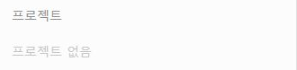
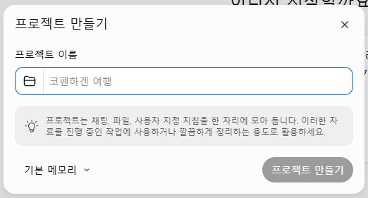
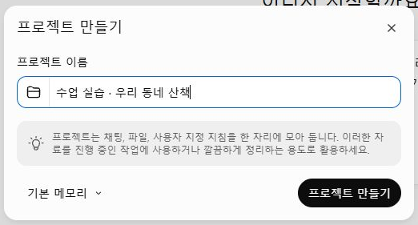
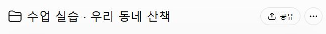

실제 조작 화면을 순서대로 연결했습니다. 아래 사진을 누르면 원본 크기로 열립니다.Bravo AI Life 기본 사용법 · 1차시로 돌아가기
STEP 04
산책 준비용 프로젝트 만들기
하나의 주제에 쓸 대화와 지침을 한곳에 모읍니다.
왼쪽에서 프로젝트 찾기
사이드바를 열고 프로젝트 항목에 마우스를 올려 새 프로젝트 만들기를 선택합니다. ＋ 메뉴의 Work와는 출발 위치가 다릅니다.
새 프로젝트 창 확인
이름을 정하고 메모리 등 추가 옵션은 수업에서 바꿀 필요가 없습니다.

이름을 입력하고 만들기
수업 실습 · 우리 동네 산책이라고 입력하고 프로젝트 만들기를 누르세요.

프로젝트 이름 확인
대화 위에 방금 만든 이름이 보이면 준비됐습니다. 다음 단계는 이 프로젝트 안에서 진행합니다.
